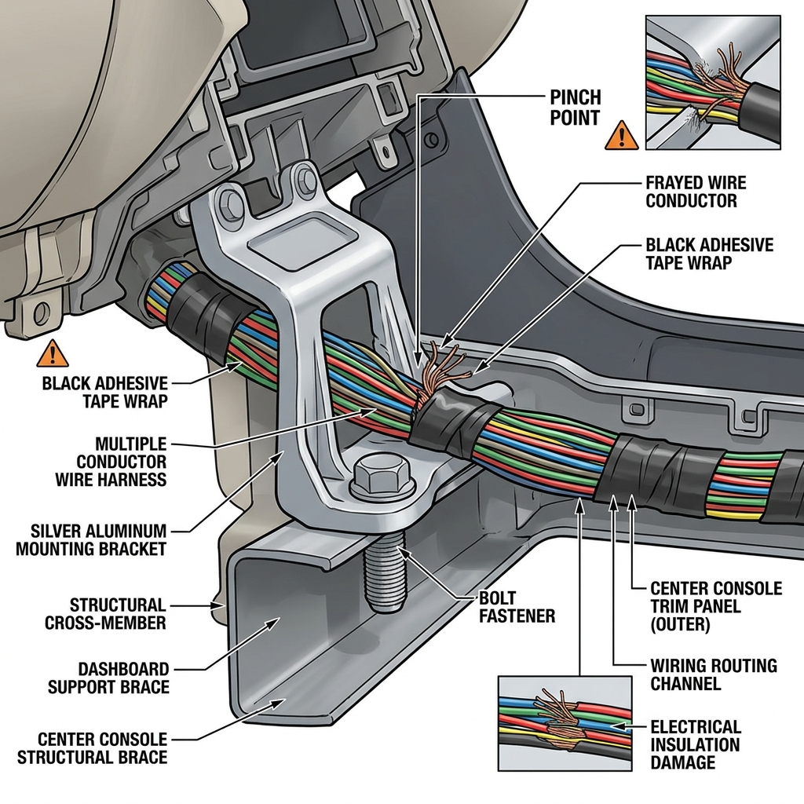

1. The Showroom Illusion: The Psychological Trap of the "Brand-New" Car
There is an intense emotional high that accompanies the purchase of a new automobile. The glittering showroom lights reflecting off a pristine hood, the sweet chemical fragrance of factory-fresh adhesives and leatherette upholstery, and the warm hospitality of sales executives bowing and clapping as they hand over the keys. Under the influence of this sensory experience, a natural psychological bias takes over. The buyer assumes that because a vehicle is "brand new" and has a price tag running into millions of rupees, its mechanical, electrical, and structural integrity must be flawless.
When the sales advisor smiles and assures you, "Sir, our workshop team has already completed a rigorous factory-certified Pre-Delivery Inspection (PDI). Everything is absolutely perfect, you don't need to check anything," most buyers gladly take their word. Questioning the dealer feels like an unnecessary act of distrust.
However, as an Automotive Quality and Customer Experience Specialist who has spent years analyzing manufacturing defects and logistics-related damages, I can tell you that this trust is misplaced. A brand-new car is not a sterile product that materialized directly in the showroom. It is a complex assembly of over 30,000 components that has traveled hundreds of kilometers via trains and open multi-car transport trailers, sat in open, unpaved factory transit depots, and spent weeks or months rotting in local dealership holding yards.
During this journey, vehicles are exposed to high risks of structural scrapes on trailer ramps, minor bumps in transit, rodent infestations in wild yards, and paint degradation from bird droppings, acid rain, and industrial chemical fallout. Relying solely on the dealer's word to verify this complex machine is a massive gamble. The only way to guarantee you are not buying a damaged car is through a systematic, third-party Independent Car Inspection conducted before you sign the RTO registration forms.

Infographic 1: The Timeline of Leverage: Pre-Registration vs. Post-Registration
A comparative chart illustrating how buyer leverage collapses from 100% to near zero the moment the RTO road tax is paid and the vehicle registration number is generated.
2. The Economics of Dealership Conflict of Interest
To understand why you cannot take a dealership's word at face value, you must look behind the showroom curtain at the business economics of car dealerships. Dealers are independent franchise operations, not the manufacturers themselves. They buy inventory from car manufacturers using credit lines known in the industry as "floorplan stock financing."
Under a floorplan financing agreement, the bank pays the manufacturer for the cars, and the dealer pays the bank daily interest on every single vehicle sitting in their lot. The longer a car sits unsold or undelivered in the yard, the more interest overhead it accumulates, directly eating into the dealership’s razor-thin profit margins. A vehicle that sits in the yard for 6 months (a "yard queen") becomes a financial liability.
This financial pressure flows down to the sales representatives. A sales advisor's performance and monthly salary bonus are determined by a single metric: retail handovers. They do not get paid for vehicles sitting in the yard; they get paid only when a chassis number is linked to a customer, RTO taxes are paid, and the vehicle is delivered.
This system creates an inherent, structural conflict of interest:
- If a sales representative or dealer yard technician notices a transit defect (like a repainted door, a cracked bumper underside, or a weak battery) on a car allocated to you, they are financially disincentivized to report it.
- Reporting the defect means delaying the delivery, sending the vehicle back to the workshop, losing their monthly sales target bonus, and incurring additional interest costs for the dealership.
- Instead, the incentive is to mask the defect, push for immediate RTO registration, and hand the car over. Once the car is registered under your name, the sale is legally complete. Any defect found afterward is classified as a "warranty issue," shifting the entire financial and diagnostic headache from the dealer's balance sheet to the manufacturer’s warranty coverage and your personal time.
| Dealership Financial Drivers | Immediate Objective | Impact on the Customer |
|---|---|---|
| Floorplan Stock Financing Interest | Deliver aging inventory as fast as possible to stop daily bank interest accumulation. | Dealers may allocate older "yard queens" (cars sitting for 6+ months) to unsuspecting buyers. |
| Sales Representative Commissions | Achieve monthly handover volume targets before the month-end closing cut-off. | Rushed deliveries and immense pressure on the customer to register the vehicle without a proper inspection. |
| Damage Repair Cost Allocation | Avoid paying out-of-pocket for yard damages or transit scrapes using dealership funds. | Minor body scrapes and cracked components are repaired using cheap, in-house methods and hidden rather than replaced. |
| Post-Registration Legal Immunity | Convert the vehicle status to "Registered" to legally block any replacement or cancellation claims. | The customer loses all leverage. The dealership is no longer forced to replace a lemon; they only offer warranty repairs. |
3. The Myth of the Dealer's "In-House" PDI: What Actually Happens
Almost every dealership will proudly show you their "PDI Check Sheet," containing dozens of points marked with neat green ticks. To the average buyer, this looks like a thorough technical audit. In reality, a dealership’s in-house Pre-Delivery Inspection is a basic preparation routine, not a quality control audit.
The primary goal of a dealer’s PDI is to make the car look presentable for delivery day. The process is usually handed over to low-cost cleaning contractors and junior mechanics. The "inspection" consists of:
- A high-pressure water wash to strip off transit grime and yard dust.
- Wiping down the interior dashboard and vacuuming the seats.
- Applying tire polish to make worn or dirty rubber look glossy.
- Checking the engine oil level and topping up the windshield washer fluid.
This process does not involve deep technical diagnostics. Dealership cleaners do not use paint depth gauges to check if a fender was repainted after scraping a carrier ramp. They do not run battery health conductance tests to see if a stagnant car's battery cells have sulfated. They do not crawl under the car with a crawler to inspect if the subframe scraped on high loading docks.
In fact, the dealer's prep routine is often used to mask defects. If a car has transit scratches, the cleaning team applies heavy coats of silicone-based glaze wax. Under showroom lights, the wax fills the scratches and makes the paint look perfectly smooth. However, after three or four washes, the wax strips away, exposing the scratches underneath. Similarly, if a low-voltage battery has triggered temporary CAN bus fault codes in the ECU, mechanics will simply clear the codes using an OBD tool and hope they do not return until after delivery.
When new cars sit stagnant in dealer yards, their battery voltage often drops below 11.5 volts. This voltage drop causes the vehicle's electronic modules to lose communication, storing dozens of "Low Voltage Communication Fault" codes in the ECU. Instead of replacing the battery, dealer technicians often run a global code-clear command right before delivery. The warning lights go off temporarily, but the underlying damaged battery cells remain, waiting to fail within a few weeks of ownership.
4. Comparative Breakdown: Dealer PDI vs. CARROBAAR_Drive Independent PDI
To highlight the difference between a dealer's basic cleanup and a professional audit, let us compare their inspection methods, tools, and objectives. An Independent Car Inspection is built on objective data and engineering diagnostic tools, with no conflict of interest.
| Inspection Parameter | Dealer's In-House PDI | CARROBAAR_Drive Independent PDI |
|---|---|---|
| Primary Objective | Prepare the vehicle cosmetically for delivery and complete the sale. | Expose all mechanical, electrical, and structural defects objectively. |
| Conflict of Interest | High. Sponsored by the entity selling the vehicle; incentivized to hide flaws. | Zero. Totally independent; hired by the buyer to report facts. |
| Time Invested | 15 to 30 minutes (rushed through basic checklists). | 1.5 to 2.5 hours of detailed technical auditing. |
| Paint Integrity Audit | Visual check under showroom lights. Easy to miss repaints. | 360-degree digital Dry Film Thickness (DFT) paint depth gauge scan (microns). |
| Diagnostics | None, unless a warning light is actively illuminated. | Full OBD2 ECU scan to read pending, active, and historical Diagnostic Trouble Codes (DTCs). |
| Battery Status | Jump-start if dead; no cell health validation. | Digital multimeter check for resting voltage and crank-load health. |
| Underbody Inspection | Rarely performed; basic check for visible leaks. | Crawl check with specialized lights to inspect engine guards, subframe, and exhaust line. |
| Verification Checks | Basic count of tires and accessories. | Cross-referencing all 5 tyre DOT manufacturing dates and window glass stamps with VIN. |
5. Case Study: The Honda Amaze AC Console Wiring Defect
To understand how critical a pre-delivery inspection is, let us look at a real-world case study from our inspections in Gujarat. The defect we uncovered was a hidden electrical hazard that a standard dealer check-sheet would have missed.
Honda Amaze AC Console Wiring Defect
Defect ExposedHonda Amaze 1.2 i-VTEC VX (Brand New, Unregistered)
Dealership Yard, Vadodara, Gujarat
AC button backlight and console illumination failed to operate when headlights were switched on. The AC compressor clutch also failed to engage on command.
During our electrical system audit, we found a blown 10A HVAC fuse in the passenger footwell fuse box. Replacing the fuse caused the new one to blow instantly. We guided the dealer's mechanic to open the dashboard side console trim. We discovered that during factory dashboard assembly, the HVAC wiring harness had been pinched between a sharp-edged metal dashboard support brace and the plastic console casing. The vibration during transit had sheared the insulation, creating a direct short-to-ground path.
If this went undetected, the owner would have taken delivery of a car with no AC. If a mechanic had simply bypassed the fuse with a thicker wire (a common bad practice to "fix" blown fuses), the high current would have melted the wiring loom, potentially starting an electrical fire behind the dashboard.
We flagged the defect before registration. The dealer had to dismantle the lower console trim, cut out the damaged wire section, splice and solder a new wire, seal it with heat-shrink tubing, re-route the harness safely away from the metal brace, and secure it with nylon clips. Delivery was accepted only after we re-inspected and confirmed the system was working safely.

Infographic 2: Pinched Console Wiring Harness Anatomy
A detailed schematic showing how assembly tolerances and pinched wires behind dashboard brackets create short-to-ground electrical risks.
6. 5 Dealer Inspection Myths Debunked (Interactive Checklist)
Dealerships often use common myths to discourage buyers from hiring independent inspectors. Let us look at these myths and the facts behind them. Use the interactive checklist below to mark them off as you prepare for your delivery:
Debunking Dealer Pre-Delivery Myths
Click on each myth below to read the truth and check it off your list before you buy.
-
Myth 1: "The factory has already done a strict quality check, so a PDI is redundant."
The Fact: Factory quality audits are statistical (they do not check every single car in detail). More importantly, the factory cannot control damages that happen during carrier transport, unloading, and yard storage. -
Myth 2: "Our dealer PDI is just as thorough as an independent inspection."
The Fact: A dealer's PDI is a basic cosmetic prep (wash, vacuum, fluid top-up). They do not use paint meters, OBD scanners, or check tyre DOT dates unless they are specifically investigating a customer complaint. -
Myth 3: "If anything goes wrong, the manufacturer's warranty will cover it anyway."
The Fact: Warranties explicitly exclude cosmetic issues, paint defects, battery wear, rodent damage, and alignment issues found after delivery. The manufacturer will argue that these occurred after you took control of the car. -
Myth 4: "Conducting a PDI inside the showroom is better than at the yard."
The Fact: Showroom lights are designed to make paint look perfect. Dim or tinted spotlights mask paint mismatches, sanding marks, and shallow dents. An inspection must be done in natural daylight at the yard. -
Myth 5: "We cannot allow third-party inspectors in our yard for safety/policy reasons."
The Fact: This is a common tactic to hide defects. As the buyer paying for the asset, you have the right to inspect it. A dealer who refuses an independent inspection is a major warning sign.
7. The Financial Risk of Post-Delivery Discoveries
What happens if you find a defect after taking delivery and driving home?
Once RTO road tax is paid and the vehicle is registered, it changes ownership from the dealer to you. The dealer is no longer obligated to swap the car or offer a replacement. If you discover a repainted panel, a faulty electrical harness, or a weak battery post-delivery, your only option is to drop the car off at the service center.
This brings significant financial and emotional costs:
- Repainted Panel Resale Penalty: A repainted panel (even a minor repair done to cover a transit scratch) can lower the vehicle's future resale value by 10% to 15%. Used car buyers and valuation algorithms use paint depth meters and will assume the vehicle was in a major accident.
- Warranty Denials: If the battery dies within a month because it sat discharged in the dealer's yard, the dealer may reject the warranty claim, blaming your driving habits or alleging that you left an interior light on. You will have to pay out-of-pocket for a new battery.
- Lost Time and Stress: Leaving a brand-new car at a workshop for days during its first week of ownership to fix factory defects is a stressful experience that ruins the excitement of buying a new car.
| Undetected Delivery Defect | Typical Out-of-Pocket Repair Cost | Warranty Approval Likelihood | Typical Warranty Denial Rationale |
|---|---|---|---|
| Repainted Door Panel (Dealer repaired) | ₹8,000 – ₹15,000 (respray) + 15% Resale Depreciation | 0% (Completely Denied) | "Cosmetic damage is not covered under warranty after vehicle delivery handover." |
| Sulfated Battery (Yard discharged) | ₹5,500 – ₹12,000 (battery replacement) | 15% (Low Approval) | "Battery failure due to customer negligence (deep discharge during parking)." |
| Bent Underbody Subframe | ₹25,000 – ₹65,000 (suspension replacement) | 0% (Completely Denied) | "Attributed to road impact and accident damage caused by the driver." |
| Blocked Sunroof Drain Tube | ₹12,000 – ₹30,000 (interior cleaning & ECU swap) | 30% (Partial Approval) | "Blocked due to external environmental dust and leaves, which is maintenance." |
8. Protecting Your Purchase: The CARROBAAR_Drive Protocol
At CARROBAAR_Drive, we believe that buying a new car should be a transparent, worry-free experience. Our Independent Car Inspection protocol is designed by mechanical engineers to audit the vehicle's actual condition before you register it.
Our inspection protocol is structured, data-driven, and independent of any dealership influence:
- VIN Decoding & Age Check: We decipher the manufacturer's VIN code to confirm the exact month and year of manufacture, ensuring the car is not an aging yard queen.
- 360-Degree Paint Scan: We use digital paint depth gauges (DFT meters) to scan every panel (bonnet, doors, roof, pillars, fenders) to check for transit repaints and body fillers.
- OBD2 Diagnostic Scan: We connect diagnostic scanners to check the ECU's health and read any stored or pending trouble codes.
- Battery and Charging System Check: We test the battery's resting voltage, cranking health, and alternator output.
- Glass and Tyre Date Audit: We crosscheck the date stamps on all glass panels and the DOT week/year codes on all five tyres to confirm they match the vehicle's assembly timeline.
- Mechanical underbody & leak check: We crawl beneath the car to check for engine oil, coolant, or transmission fluid leaks, and inspect the underbody guards.
- HVAC and interior cabin audit: We test the heating and cooling output, vent controls, window motors, and check the cabin upholstery for stains or damage.
This independent audit gives you the objective data you need. If the car is flawless, you can proceed with registration with peace of mind. If we discover defects, you have the leverage to demand repairs, negotiate a price cut, or reject that chassis number and request a swap before making your final payment.
Unlike dealership staff, an independent inspector has no interest in whether you buy the car or cancel the deal. Our only goal is to provide an objective technical assessment of the vehicle's condition, helping you make an informed decision.

Infographic 3: Sample CARROBAAR_Drive PDI Report Dashboard
An example of the digital inspection report dashboard, displaying the paint micron scans, OBD fault status, and tyre DOT logs sent to clients.
Frequently Asked Questions
Don't Gamble with Your New Car Purchase
Expose hidden repaints, weak batteries, transit scrapes, and electrical system faults before you sign the RTO registration forms. Book an independent Pre-Delivery Inspection (PDI) with CARROBAAR_Drive today and protect your investment.